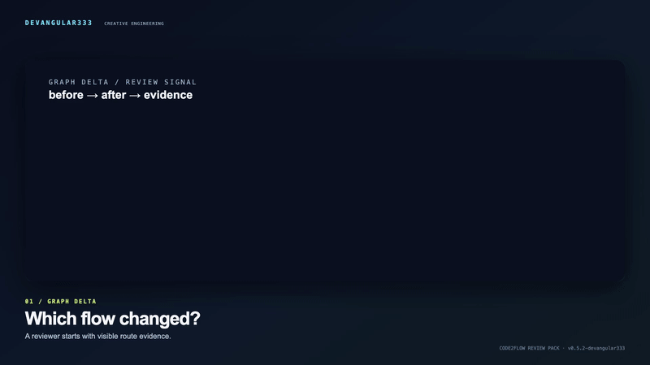

Featured · Review Pack v0.5.2
Code2Flow Review Pack
Từ hai graph revision của CRM synthetic có nhãn, Review Pack đưa thay đổi vào danh sách reviewer có thể mở source evidence, ghi chú/trạng thái và export JSON.
Tôi xây sản phẩm local-first với luồng sử dụng cụ thể, demo có thể chạy lại và giới hạn được nói rõ.
Từ hai graph revision của CRM synthetic có nhãn, Review Pack đưa thay đổi vào danh sách reviewer có thể mở source evidence, ghi chú/trạng thái và export JSON.
Phân tích static HTML/code thành flow graph và self-contained viewer; Review Pack dùng graph revisions để review thay đổi có bằng chứng.

Luyện dạy phân số tiếng Việt qua session local, coaching authored, transfer, replay và Markdown export.

Bridge file-based từ Markdown/JSON export của InkOS sang project fields của PrintFilm, có metadata và stale-state guard.